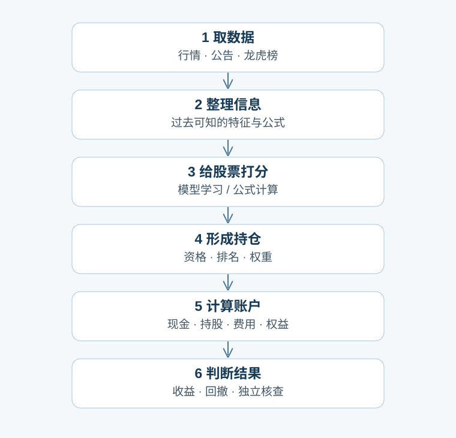
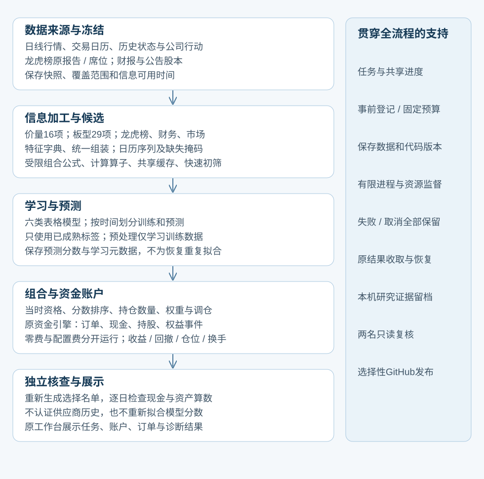

这批模型到底用什么、怎样比较
这次到底在做什么
我们要回答两个问题：加入板型、龙虎榜、财务和市场信息，是否让股票选择更有用？换成不同模型，是否改善实际账户收益或在相近收益下减少回撤？这批实验的参数和名单在结果出现前已经定好。
状态快照：原12项模型已登记；其中3项完成并经核查，真实账户尚未运行。本页说明已经完成的数据准备和固定研究方案，最新运行状态看项目总览。
拿一个星期来说
在一周最后一个交易日15:30，给每只当时合格的主板股票整理一行信息。基础模型拿到16个数，不是16项乘5天的原始K线：这16项里既有当天形态，也有过去5、20、60个交易日的收益、波动和价量比例。
模型根据过去学到的关系，为每只股票预测从下一交易日开盘到再下一次周调仓开盘的收益。假设当周最后一天是星期五，下周一开盘开始，再下周一开盘结束；遇节假日按交易日历走。这一批的目标不是周一开盘到周五收盘，也不是未来股价的绝对值。
举一个虚构数字例子：模型给甲股票预测+2%、乙+0.5%、丙-1%，选股时按预测值排序。在真实训练时，模型只能使用目标区间已经结束的旧样本；在2023—2026年的预测中，未来实际收益不会作为模型输入。
输入增加了什么
基础16项：过去1/5/20/60日收益，5/20/60日波动，相对5/20/60日平均价的位置，当天实体/振幅/收盘位置，以及5日相对20日的成交量、成交额和20日成交额波动。
板型组再加29项：利用已构建的涨跌停、板型、连板与成交特征，共45项。龙虎榜组共76项，包含近期1条/3条普通报告及过去20个市场交易日内的席位和集中度信息；其中2项在训练期完全缺失，按原规则排除，所以实际可用74项。财务与市场组加14项财务、12项市场状态，共42项。
缺少数据不会被自动解释成没有事件。缺失原因会随样本保存；模型的填充值只根据训练期估计，并额外看到每项是否缺失的标志。这个标志会增加模型实际输入列数，不能把76个研究特征误称为只有76个最终模型输入。
股票名单与小市值有什么关系
模型和对照先使用同一份资格名单：当时已上市的主板股票、非ST、有效限价、60个连续有有效报价的交易日、20日均成交额至少2000万元，以及存在未过期的已公告正股本。这里没有先筛选最小市值。
模型在这份名单中按预测分数选前100只。小市值对照在同一名单中按估算市值选最小100只。固定哈希种子11对照按股票代码与固定种子计算稳定次序，不是选11只，也不是每周重新随机抽样。其他对照是60日低波动和事前固定的半仓小市值。
本批主板口径不等于全A股：未完成不做资格筛选的全板块账户比较。全A股学习快照虽已有，但其他板块缺少同等账户侧数据，这个问题仍留在总体计划。
模型怎样学，怎样比较
基础16项比较六种模型：岭回归、弹性网、Huber稳健回归、随机森林、极端随机树和受限提升树。三种扩展信息各比较岭回归与受限提升树，总共12次固定拟合，没有根据本批结果挑超参数。
训练日期2020-01-01至2022-12-23；拟合信息截止2023-01-05。预测日期2023-01-06至2026-09-11；账户到2026-09-17。四组整理后共933284条周度股票样本，其中379842条训练记录、550711条预测记录；另有边界间隔记录。预测记录的未来目标缺失也保留，不通过删掉未知未来样本改善成绩。
2023—2026是按时间分开的预测期，但项目此前已经研究过其中的历史，不能把本批成绩称为从未接触过的全新测试。固定12项的比较用于寻找下一步线索，仍需后续稳定性和前瞻观察。
这些模型学习未来收益的回归目标，损失函数按模型不同；它们没有直接优化账户最大回撤。最后的账户检验独立进行：同样100万元、周调仓、最多100只、98%目标资金比例，分别跑零交易费用和配置费用。半仓小市值为49%对照，不能把降低仓位带来的回撤下降直接算作模型优越。
最终表格会并列累计与年化收益、最大回撤、分期收益、股票仓位、换手、费用和未解决权益。RankIC用于诊断，不是成功标准。账户末日不强制清仓，最后一个预测窗口还没走完，必须说明这个终点。
已经完成的基础工作和仍在等的结果
已完成：55个股票数据分块、四组完整输入、股票名单和目标一致性检查、时间边界检查、12项原模型登记、两份独立只读启动复核。四组都不是仅拿64只股票的试点去冒充全市场。
保留的失败：首次准备试点因重复扫描耗时超限；两次龙虎榜登记因理由字符串展开导致8GiB进程内存超限。后续仅把固定十种缺失原因改成字典存储，逐项理由文本完全相同，数值特征、标签、日期、模型参数均保持。修复后两项登记峰值约4.91/4.89GB。理由表深内存从约1.62GB降到171MB，不等于整条流程RSS按同比例下降。
复核还发现启动脚本没直接核对模型名称与实验编号的对应关系，已新增启动前映射及文件检查，旧版本和revise意见保留。当前已有3项原模型训练完成并经核查，其他原模型继续顺序运行；真实账户和策略收益比较尚未交付。
仍存在的数据局限：财报与龙虎榜快照不能还原供应商每个历史版本；龙虎榜发布时间采用保守代理，同周五收盘后的报告不会进入当周15:30决策；估算股本市值也不是逐日精确历史股份登记。训练输出保存历史预测和模型元数据，还没有完整可重新加载的拟合权重，未来在线预测属于后续工作包。
自上次汇报以来走过的研究路径
先验证工程账户桥接：完成四次合成账户执行，分别使用零交易费用和配置费用两种设置，再固定多年实验矩阵；用64只股票做资源试点，随后55块完成全量数据；四组共同名单/目标/时钟核查；处理龙虎榜存储内存阻断；补齐原12登记并修正启动身份检查；现在进入原模型训练和账户比较。
后续探索没有收缩到固定16项：已阅读Qlib官方Alpha158/Alpha360工作流，以及AlphaGen与AlphaForge的公式生成/组合方法，保存来源、阅读深度和最小否证方案。它们用于下一有限批次设计，不临时改变当前矩阵，也不把论文结果当成我们的盈利证据。
当前系统最简图

展开略详细的当前功能图

固定导航与来源
方法来源：Qlib官方基准、AlphaGen、AlphaForge。已按来源卡阅读相应章节，未复现论文结果。